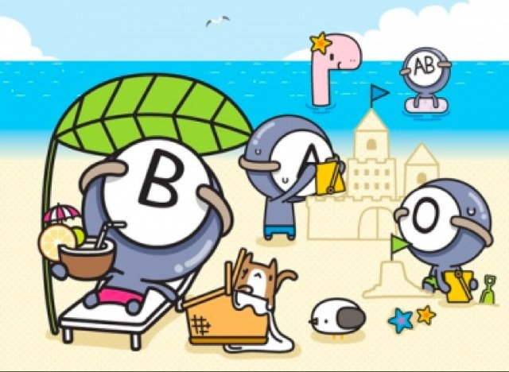

Lihat Golongan Darah : A B AB O
Karakter Golongan Darah A
Orang-orang dengan golongan darah A di percaya memiliki sifat terorganisir, konsisten, sangat mudah bekerja sama tapi selalu cemas (terlalu perfeksionis) sehingga mudah membuat orang lain tidak suka.Mereka juga memiliki ketenangan saat situasi kritis bahkan saat semua orang panik. Namun, mereka cenderung menghindari konfrontasi dan tidak nyaman di dekat orang yang tidak cocok. Golongan darah A yang pemalu, cenderung sangat sopan. Tapi semua orang dengan golongan darah A memiliki kesamaan yaitu tidak pernah benar-benar merasa cocok dengan orang lain. Mereka sangat bertanggung jawab. Jika ada pekerjaan yang harus dilakukan, mereka lebih memilih untuk mengurus sendiri. Mereka termasuk orang-orang mendambakan kesuksesan dan perfeksionis. Orang-orang bergolongan darah A juga sangat kreatif dan paling artistik dari semua tipe darah. Kemungkinan besar karena sensitivitas mereka. Orang dengan golongan darah A juga dianggap klasik karena mudah stres. Karakteristik mereka adalah:
Karakter Golongan Darah B
Orang dengan darah tipe B berkarakter paling santai. Mereka cenderung kurang kooperatif karena lebih suka mengikuti aturan dan ide-ide mereka sendiri. Mereka adalah individualis. Memperhatikan pikiran mereka lebih sedikit daripada perasaan mereka.Oleh sebab itu terkadang tampak dingin dan serius. Orang dengan darah tipe B sering dianggap tidak konvensional dari jenis golongan darah lainnya. Karakteristik mereka adalah:
Karakter Golongan Darah AB
Orang dengan golongan darah AB sulit diprediksi. Mereka dapat memiliki karakteristik di kedua ujung spektrum pada waktu yang sama. Misalnya, mereka bisa pemalu dan dapat dengan tiba-tiba melakukan hal yang sebaliknya. Mereka dengan mudah beralih dari satu berlawanan dengan yang lain. Orang yang dapat dipercaya dan bertanggung jawab, tetapi tidak dapat menangani terlalu banyak. Mereka tidak keberatan membantu asalkan kondisi mereka sendiri mampu. Orang dengan tipe darah ini tertarik dalam seni dan metafisika. AB dianggap sebagai tipe darah terburuk di Jepang. Mereka hengkang dari pekerjaan ketika terdapat hal-hal tidak memenuhi harapan mereka. Dikenal sensitif dan ingin mendapat perhatian untuk mengimbangi kekurangan dari jenis darahnya. Dalam beberapa kasus, sejumlah perusahaan mencoba membagi karyawan mereka kedalam kelompok kerja berdasarkan golongan darah dan tak seorang pun ingin bekerja dengan kelompok golongan darah AB. Karakteristik mereka adalah:
Karakter Golongan Darah O
Orang dengan golongan darah O adalah orang yang terbuka, enerjik dan sosial. Mereka yang paling fleksibel dibandingkan dengan semua golongan darah. Mereka mudah memulai proyek tetapi sering mengalami kesulitan berikutnya karena mereka mudah menyerah. Mereka bertingkah dan tidak terlalu dapat diandalkan. Golongan darah O selalu mengatakan apa yang ada di pikiran mereka. Mereka menghargai pendapat orang lain dan suka menjadi pusat perhatian. Juga, orang dengan darah O sangat percaya diri. Karakteristik mereka adalah:
KARAKTER GOLONGAN DARAH BERDASARKAN URUTAN
Yang paling sering terlambat dalam urusan waktu :
1. B (karena terlalu santai)
2. O (karena flamboyan)
3. AB (karena mudah mengganti program)
4. A (karena gagal dalam disiplin)
Yang paling susah mentolerir kesalahan orang :
1. A (karena perfeksionis dan narsismenya terlalu besar)
2. B (karena easy going tapi juga easy judging/ mudah menghakimi)
3. AB (karena asal beda)
4. O (karena easy judging tetapi juga easy pardoning/ mudah memaafkan)
Yang paling bisa dipercaya :
1. A (karena konsisten dan taat hukum)
2. O (demi menjaga keseimbangan)
3. B (demi menjaga kenikmatan hidup)
4. AB (mudah mengganti frame of reference)
Yang paling disukai untuk dijadikan teman :
1. O (karena sportif)
2. A (karena selalu tepat waktu)
3. AB (karena kreatif)
4. B (tergantung mood)
Yang paling tidak disukai untuk dijadikan teman :
1. B (egois, maunya sendiri)
2. AB (double standard)
3. A (terlalu taat)
4. O (sulit mengalah)
Yang paling mudah tersesat :
1. B
2. A
3. O
4. AB
Yang paling banyak meraih medali di olimpiade olah raga :
1. O (terampil dalam olah raga)
2. A (matematis)
3. B (tak terpengaruh tekanan dari sekitar)
4. AB (alergi pada setiap jenis olah raga)
Yang paling banyak jadi direktur dan pemimpin :
1. O (karena berjiwa pemimpin dan problem-solver)
2. A (karena menghargai waktu dan teliti)
3. B (karena sensitif dan mudah ambil keputusan)
4. AB (karena kreatif dan suka ambil resiko)
Yang paling mudah menabung :
1. A (suka menghitung bunga bank)
2. O (suka melihat prospek)
3. AB (menabung karena memiliki proyek)
4. B (baru menabung jika memiliki uang banyak)
Yang paling kuat ingatannya :
1. O
2. AB
3. A
4. B
Yang paling panjang umur :
1. O (tidak mudah stres, memiliki antibodi paling kuat)
2. A (hidup teratur)
3. B (mudah mencari kompensasi stres)
4. AB (emosinya tidak stabil)
Yang paling mudah untuk gemuk :
1. O (nafsu makan besar, makannya cepat)
2. B (makannya lama, selalu menambah makan dan suka makanan enak)
3. A (hanya makan apa yang ada di piring, terpengaruh program diet)
4. AB (makan tergantung mood, mudah kena anoreksia)
Paling mudah digigit nyamuk : O (darahnya manis)
Yg paling mudah flu/demam/batuk/pilek :
1. A (lemah terhadap virus dan pernyakit menular)
2. AB (lemah terhadap kebersihan)
3. O (makan apapun)
4. B (makan, tidur tidak teratur)
Apa yang dimakan pada acara makan di sebuah pesta :
1.O (ambil protein hewani, segala jenis daging)
2.A (ambil yg berimbang. 4 sehat 5 sempurna)
3.B (suka ambil makanan yang banyak kandungan airnya seperti sup, soto, bakso dsb)
4.AB (hobi mencicipi semua masakan, selagi gratis)
Yg paling cepat botak :
1. O
2. B
3. A
4. AB
Yang tidurnya paling nyenyak dan susah untuk dibangunkan :
1. B (tetap mendengkur meski ada Tsunami)
2. AB (jika lagi mood, sleeping is everything)
3. A (tidur harus 8 jam sehari, sesuai hukum)
4. O (baru tidur kalau benar-benar capek dan membutuhkan)
Yang paling cepat tertidur :
1. B (paling mudah ngantuk, bahkan sambil berdiripun bisa tertidur)
2. O (Kalau sedang capek dan tidak ada kerjaan mudah ngantuk)
3. AB (tergantung mood)
4. A (tergantung aturan)
Penyakit yang mudah menyerang :
1.A (stres, pelupa)
2.B (lemah terhadap virus influenza, paru-paru)
3.O (gangguan pencernaan dan mudah kena sakit perut)
4.AB (kanker dan serangan jantung, mudah kaget)
Apa yg perlu dianjurkan agar tetap sehat :
1. A (Santailah sesekali, tidak usah terlalu tegang dan serius)
2. B (Sesekali perlu serius sedikit, meditasi, main catur)
3. O (Sesekali mengobrol santai, jalan-jalan)
4. AB (Perlu cari kegiatan yang menyenangkan dan membuat lega).
Yang paling sering kecelakaan lalu lintas (berdasarkan data kepolisian)
1. A
2. B
3. O
4. AB